## all dependencies required to run the following analysis
library(tidyr)
library(vegan)
library(dplyr)
library(MASS)
library(pwr)Community Regen Analysis
Set up
Code from Trevor, modified 9/05/2024, original in Reburns_Understory_updated.R
## creating a function to add arrows on the chart
error.bar <- function(x, y, upper, lower=upper, length=0.1,...){
arrows(x,y+upper, x, y-lower, angle=90, code=0, length=length, ...)
}
## creating a function for standard error
se <- function(x){sd(x)/sqrt(length(x))}
## R squared function
pseudo.R.squared <- function(model){
1 - (model$deviance/model$null.deviance)
} Data Cleaning
## reading in the data
understory <- read.csv("Upland_UndCover.csv")
understory$ORGANIC <- NULL ## removing non-species data
understory$MINERAL <- NULL
understory$ROCK <- NULL
understory$CWD <- NULL
understory$LITTER <- NULL
table(colnames(understory)) ## visualizing the species present.
Achillea.millefolium Alnus.crispa Alnus.virdis
1 1 1
Arnica.alpuna Aulacpomnium.palustre Aulacpomnium.turgid
1 1 1
Betula.neoalaskana Bryum.arcticum Bryum.pseudotriguetum
1 1 1
Ceratodon.purpureus Cetraria.culculata Cetraria.nivalis
1 1 1
Chamaedaphne.calyculata Chamerion.angustifolium Cladonia.belliflora
1 1 1
Cladonia.borealis Cladonia.clorophaeau Cladonia.deformis
1 1 1
Cladonia.gracilis Cladonia.rangiferina Cladonia.squarosa
1 1 1
CORNER Cornus.canadensis Dicranium.antifolium
1 1 1
Dicranum.polysetum Dicranum.scoparium Equisetum.arvense
1 1 1
Equisetum.scripotes Equisetum.sylvaticum Eriophorum.vaginatum
1 1 1
Hylocomium.splendens Ledum.decumbens Ledum.groenlandicum
1 1 1
Linum.perenne Luzula.arcuata Lycopodium.annotinum
1 1 1
Marchantia.latifolia Marchantia.polymorpha Mertensia.paniculata
1 1 1
Multiclavula.mucida Nephroma.espalidum Nephroma.resputinatum
1 1 1
Oxycoccus.microcarpos Pelitigera.neopolydacta Peltigera.apthosa
1 1 1
Petasites.frigidus Petasites.nivalis Picea.glauca
1 1 1
Picea.mariana Pleurozoum.scherberi PLOT
1 1 1
Poa.annua Poa.arctea Poa.palustre
1 1 1
Poa.pratensis Polytrichum.commune Polytrichum.piliferum
1 1 1
Polytrichum.strictum Populus.tremuloides Ptilium.crista.castrensis
1 1 1
Pyrola.secunda Rhytidiadelphus.rugosum Rosa.acicularis
1 1 1
Rubus.articus Rubus.chamaemorus Salix
1 1 1
Spahgnum.angustifolium Spiraea.beauverdiana Timmia.austriacaca
1 1 1
TREAT UNK_CLADONIA UNK_GRAM
1 1 1
UNK_LICHEN UNK_MOSS UNK_RUBUS
1 1 1
UNK.BACK UNK.FORB UNK.MICRO
1 1 1
Vaccinium.alaskensis Vaccinium.caespitosum Vaccinium.ovalifolium
1 1 1
Vaccinium.viginosum Vaccinium.vulcanorum
1 1 understory <- understory[-grep("UNK", colnames(understory))] ## removing unknowns from main understory data
understory_plots <- data.frame(plot = unique(understory$PLOT)) ## making a dataframe with only plots
understory_plots$treat <- understory$TREAT[match(understory_plots$plot, understory$PLOT)] ## and treatments to reference later
understory_long <- gather(understory,species,cover, Achillea.millefolium:Vaccinium.viginosum) ## converting to long format to summarize
understory_long <- understory_long %>%
group_by(PLOT, species) %>%
summarise(plotavg = mean(cover)) ## summarizing by transect then by plot; taking the average cover 1m squared`summarise()` has grouped output by 'PLOT'. You can override using the
`.groups` argument.understory_long <- as.data.frame(understory_long) ## converting the tibble to a data frame
max(understory_long$plotavg) ## looking at the maximum species cover for a plot; nothing too crazy[1] 99min(understory_long$plotavg) ## looking at the minimum species cover for a plot[1] 0length(unique(understory_long$species)) ## currently 72 unique species[1] 72length(unique(understory_long$PLOT)) ## 26 plots[1] 26length(unique(understory$PLOT)) ## making sure the number of plots match; they should both be 26[1] 26## Functional Groups Adding ##
FGkey <- read.csv("Understory_FG.csv") ## reading in the functional group key
FGkey$Species <- sub(" ", ".", FGkey$Species) ## changing the species column to read the same as species in the understory dataframe
understory_long$FG <- FGkey$Type[match(understory_long$species, FGkey$Species)]
unique(understory_long$species[is.na(understory_long$FG)])[1] "Achillea.millefolium" "Alnus.virdis"
[3] "Cetraria.culculata" "Populus.tremuloides"
[5] "Ptilium.crista.castrensis" "Salix" ## a few species not covered in the FGkey
# Achillea.millefolium == forb
# Alnus.virdis == decid shrub
# Cetraria.culculata == Lichen
# Populus.tremuloides == deciduous trees
# Ptilium.crista.castrensis == Moss
# Salix == decid shrub
FGkey.addendum <- data.frame(Type = c("forb", "decid shrub", "Lichen",
"deciduous trees", "Moss", "decid shrub"),
acronym = NA,
Genus = NA,
Species = unique(understory_long$species[is.na(understory_long$FG)]),
Notes = NA)
FGkey <- rbind(FGkey, FGkey.addendum);rm(FGkey.addendum)
understory_long$FG <- FGkey$Type[match(understory_long$species, FGkey$Species)] ## adding final functional groups
unique(understory_long$species[is.na(understory_long$FG)]) ## no NAs so all species have an associated Functional Groupcharacter(0)length(unique(understory_long$species)) ## currently 72 unique species, but includes overstory species[1] 72table(understory_long$FG) ## looking at the functional groups; per 1/17/2024 decided to lump FG to be a bit more common
conifers decid shrub deciduous trees evergreen shrub
52 130 78 260
forb graminoid Lichen Moss
260 130 364 520
seedless vascular
78 understory_long$FG[understory_long$FG == "conifers" | understory_long$FG == "deciduous trees"] <- "tree" ## lumping a tree group
understory_long$FG[understory_long$FG == "decid shrub" | understory_long$FG == "evergreen shrub"] <- "shrub" ## lumping a shrub group
# understory_long$FG[understory_long$FG == "Lichen" | understory_long$FG == "Moss"] <- "non-vascular" ## lumping a non-vascular group
understory_long <- understory_long[understory_long$FG != "tree",] ## removing tree species
length(unique(understory_long$species)) ## currently 67 unique species[1] 67understory_wide <- reshape(understory_long[,c(1:3)], idvar = "PLOT", timevar = "species", direction = "wide") ## reshaping the data
rownames(understory_wide) <- understory_wide$PLOT ## renaming rows to be PLOT
understory_wide$PLOT <- NULL ## removing nonspecies column
colnames(understory_wide) <- sub("plotavg.", "", colnames(understory_wide)) ## changing column names to be species codes
table(colnames(understory_wide)) ## looking at the species, will correct the ones I need to
Achillea.millefolium Alnus.virdis Arnica.alpuna
1 1 1
Aulacpomnium.palustre Aulacpomnium.turgid Bryum.arcticum
1 1 1
Bryum.pseudotriguetum Ceratodon.purpureus Cetraria.culculata
1 1 1
Cetraria.nivalis Chamaedaphne.calyculata Chamerion.angustifolium
1 1 1
Cladonia.belliflora Cladonia.borealis Cladonia.clorophaeau
1 1 1
Cladonia.deformis Cladonia.gracilis Cladonia.rangiferina
1 1 1
Cladonia.squarosa Cornus.canadensis Dicranium.antifolium
1 1 1
Dicranum.polysetum Dicranum.scoparium Equisetum.arvense
1 1 1
Equisetum.scripotes Equisetum.sylvaticum Eriophorum.vaginatum
1 1 1
Hylocomium.splendens Ledum.decumbens Ledum.groenlandicum
1 1 1
Linum.perenne Luzula.arcuata Lycopodium.annotinum
1 1 1
Marchantia.latifolia Marchantia.polymorpha Mertensia.paniculata
1 1 1
Multiclavula.mucida Nephroma.espalidum Nephroma.resputinatum
1 1 1
Oxycoccus.microcarpos Pelitigera.neopolydacta Peltigera.apthosa
1 1 1
Petasites.frigidus Petasites.nivalis Pleurozoum.scherberi
1 1 1
Poa.annua Poa.arctea Poa.palustre
1 1 1
Poa.pratensis Polytrichum.commune Polytrichum.piliferum
1 1 1
Polytrichum.strictum Ptilium.crista.castrensis Pyrola.secunda
1 1 1
Rhytidiadelphus.rugosum Rosa.acicularis Rubus.articus
1 1 1
Rubus.chamaemorus Salix Spahgnum.angustifolium
1 1 1
Spiraea.beauverdiana Timmia.austriacaca Vaccinium.alaskensis
1 1 1
Vaccinium.caespitosum Vaccinium.ovalifolium Vaccinium.viginosum
1 1 1
Vaccinium.vulcanorum
1 understory <- as.data.frame(apply(understory_wide, 1, sum, na.rm = TRUE)) ## getting the total cover per plot
colnames(understory) <- "TotalPlotCover" ## renaming the column for later
tmp <- as.data.frame(ifelse(understory_wide[,] > 0,1,0)) ## creating a Presence/Absence Richness Dataframe
understory$Richness <- apply(tmp, 1, sum, na.rm = TRUE);rm(tmp) ## getting the count of each species
understory$simpson <- diversity(understory_wide, index = "simpson") ## calculating simpson diversity index
understory$treatment <- as.factor(understory_plots$treat[match(rownames(understory), understory_plots$plot)])
hist(understory$TotalPlotCover) 
hist(understory$Richness)
hist(understory$simpson)
rm(FGkey)Figure 2: Ordination and Bray-Curtis
#### Figure 2 - Ordination and Bray-Curtis ####
pal <- c("#f6d746", "#e55c30", "#84206b", "#140b34")
pal2 <- c(rgb(0.96,0.84,0.27,0.5),rgb(0.89,0.36,0.18,0.5),rgb(0.51,0.12,0.41,0.5),rgb(0.07,0.04,0.20,0.5))
## NMDS Ordination
par(mfrow = c(1,2))
set.seed(1)
NMDSord <- metaMDS(understory_wide, try = 1000, distance = "bray") ## convergenceSquare root transformation
Wisconsin double standardization
Run 0 stress 0.1564287
Run 1 stress 0.1694398
Run 2 stress 0.1763943
Run 3 stress 0.1564287
... Procrustes: rmse 5.611125e-06 max resid 1.285072e-05
... Similar to previous best
Run 4 stress 0.1651061
Run 5 stress 0.1766159
Run 6 stress 0.1595319
Run 7 stress 0.1819457
Run 8 stress 0.1564287
... Procrustes: rmse 4.871195e-05 max resid 0.0001016678
... Similar to previous best
Run 9 stress 0.1801301
Run 10 stress 0.1564287
... Procrustes: rmse 2.234911e-05 max resid 6.058854e-05
... Similar to previous best
Run 11 stress 0.1822345
Run 12 stress 0.169117
Run 13 stress 0.1787032
Run 14 stress 0.1595319
Run 15 stress 0.1598556
Run 16 stress 0.1651032
Run 17 stress 0.1657491
Run 18 stress 0.1564287
... Procrustes: rmse 9.812323e-06 max resid 2.203076e-05
... Similar to previous best
Run 19 stress 0.1646452
Run 20 stress 0.1688607
*** Best solution repeated 4 timesenv <- data.frame(site = rownames(understory),
treatment = understory$treatment)
rownames(env) <- env$site
str(env)'data.frame': 26 obs. of 2 variables:
$ site : chr "7" "8" "10" "11" ...
$ treatment: Factor w/ 4 levels "0","1","2","3": 4 3 1 1 2 4 4 3 3 4 ...plot(NMDSord, type = "n",display = "sites", las = 1)
points(NMDSord, display = "sites", pch = 19, cex = .75, col = pal[as.factor(env$treatment)])
# text(NMDSord, display = "species", cex = 1) ## text to add plant codes
# vectors <- envfit(NMDSord, env$treatment)
# plot(vectors, col = "firebrick", type = "n")
ordiellipse(NMDSord, display = "sites", env$treatment, draw = "lines",
col = pal, label = FALSE) ## ellipses based on slide exposure
legend("bottomright", legend = c("No Fire", "1 Fire", "2 Fires", "3 Fires"), col = pal, pch = 15, cex = 1, ncol = 2, bty = "n")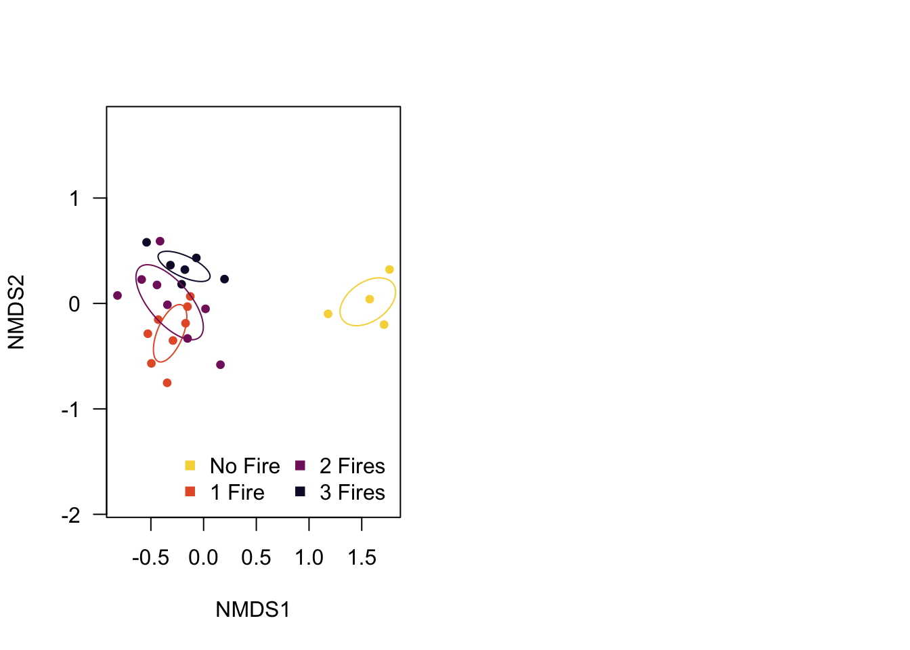
## Bray-Curtis Dissimilarity analysis
understory_FireMat <- understory_wide ## making a second matrix
understory_plots$trt_site <- paste(understory_plots$treat, understory_plots$plot, sep = "_") ## creating a unique treatment
rownames(understory_FireMat) <- understory_plots$trt_site[match(rownames(understory_wide), understory_plots$plot)]
understory_FireMat <- understory_FireMat[order(rownames(understory_FireMat)),]
understory_FireMat <- as.matrix(understory_FireMat) ## turning community dataframe into a matrix
Understory.dist <- vegdist(understory_FireMat, method ="bray", na.rm = TRUE) ## creating a dissimilarity matrix for Bray-Curtis
Understory.dist.mat <- as.matrix(Understory.dist) ## turning into a matrix
T0.mat <- Understory.dist.mat[grep("0_", rownames(Understory.dist.mat)),grep("0_", colnames(Understory.dist.mat))]
mean(T0.mat)[1] 0.1441628T0.vec <- c(T0.mat)
mean(T0.vec)[1] 0.1441628T0.vec <- unique(T0.vec)
T1.mat <- Understory.dist.mat[grep("1_", rownames(Understory.dist.mat)),grep("1_", colnames(Understory.dist.mat))]
mean(T1.mat)[1] 0.5000524T1.vec <- c(T1.mat)
mean(T1.vec)[1] 0.5000524T1.vec <- unique(T1.vec)
T2.mat <- Understory.dist.mat[grep("2_", rownames(Understory.dist.mat)),grep("2_", colnames(Understory.dist.mat))]
mean(T2.mat)[1] 0.5921583T2.vec <- c(T2.mat)
mean(T2.vec)[1] 0.5921583T2.vec <- unique(T2.vec)
T3.mat <- Understory.dist.mat[grep("3_", rownames(Understory.dist.mat)),grep("3_", colnames(Understory.dist.mat))]
mean(T3.mat)[1] 0.4837302T3.vec <- c(T3.mat)
mean(T3.vec)[1] 0.4837302T3.vec <- unique(T3.vec)
disimAOV <- data.frame(vals = c(T0.vec, T1.vec, T2.vec, T3.vec),
treat = c(rep("T0", length(T0.vec)), rep("T1", length(T1.vec)),rep("T2", length(T2.vec)),rep("T3", length(T3.vec))))
str(disimAOV)'data.frame': 80 obs. of 2 variables:
$ vals : num 0 0.237 0.154 0.288 0.139 ...
$ treat: chr "T0" "T0" "T0" "T0" ...disimAOV$treat <- as.factor(disimAOV$treat)
disimAOV <- disimAOV[disimAOV$vals != 0,] ## removing comparisons to self
a1 <- aov(vals ~ treat, data = disimAOV)
summary(a1) Df Sum Sq Mean Sq F value Pr(>F)
treat 3 1.150 0.3833 27.39 6.3e-12 ***
Residuals 72 1.008 0.0140
---
Signif. codes: 0 '***' 0.001 '**' 0.01 '*' 0.05 '.' 0.1 ' ' 1TukeyHSD(a1) Tukey multiple comparisons of means
95% family-wise confidence level
Fit: aov(formula = vals ~ treat, data = disimAOV)
$treat
diff lwr upr p adj
T1-T0 0.37927134 0.23930898 0.519233690 0.0000000
T2-T0 0.48314511 0.34272611 0.623564113 0.0000000
T3-T0 0.38825912 0.23797440 0.538543832 0.0000000
T2-T1 0.10387377 0.01995737 0.187790178 0.0091570
T3-T1 0.00898778 -0.09056101 0.108536574 0.9952467
T3-T2 -0.09488599 -0.19507580 0.005303817 0.0698945plot(vals~treat,
data = disimAOV,
col = pal2,
las = 1,
ylim = c(0,1),
xlab = "Number of Fires",
names = c("0", "1", "2", "3"),
ylab = "Bray-Curtis Dissimilarity")
axis(3,at = 1:4, labels = c("A", "B", "C", "BC"))
stripchart(vals~treat, data=disimAOV,
vertical = TRUE,
col = "black",
method = "jitter",
add = TRUE,
pch = 20,
cex = 0.75)
aggregate(disimAOV$vals, by = list(disimAOV$treat), FUN = mean) Group.1 x
1 T0 0.1922171
2 T1 0.5714884
3 T2 0.6753622
4 T3 0.5804762# Mean x
# 1 T0 0.1922171
# 2 T1 0.5714884
# 3 T2 0.6753622
# 4 T3 0.5804762
aggregate(disimAOV$vals, by = list(disimAOV$treat), FUN = se)[,2]*1.96 ## 95% CI[1] 0.04686374 0.03433148 0.05782254 0.05193598# 95% CI x
# 1 T0 0.04686374
# 2 T1 0.03433148
# 3 T2 0.05782254
# 4 T3 0.05193598
summary(a1) Df Sum Sq Mean Sq F value Pr(>F)
treat 3 1.150 0.3833 27.39 6.3e-12 ***
Residuals 72 1.008 0.0140
---
Signif. codes: 0 '***' 0.001 '**' 0.01 '*' 0.05 '.' 0.1 ' ' 1TukeyHSD(a1) Tukey multiple comparisons of means
95% family-wise confidence level
Fit: aov(formula = vals ~ treat, data = disimAOV)
$treat
diff lwr upr p adj
T1-T0 0.37927134 0.23930898 0.519233690 0.0000000
T2-T0 0.48314511 0.34272611 0.623564113 0.0000000
T3-T0 0.38825912 0.23797440 0.538543832 0.0000000
T2-T1 0.10387377 0.01995737 0.187790178 0.0091570
T3-T1 0.00898778 -0.09056101 0.108536574 0.9952467
T3-T2 -0.09488599 -0.19507580 0.005303817 0.0698945rm(disimAOV);rm(env);rm(T0.mat);rm(T1.mat);rm(T2.mat);rm(T3.mat);rm(Understory.dist.mat)
rm(T0.vec);rm(T1.vec);rm(T2.vec);rm(T3.vec);rm(Understory.dist)
rm(a1);rm(NMDSord)Figure 3: Richness and Simpsons
a2 <- aov(Richness ~ treatment, data = understory)
summary(a2) Df Sum Sq Mean Sq F value Pr(>F)
treatment 3 228.3 76.11 7.621 0.00113 **
Residuals 22 219.7 9.99
---
Signif. codes: 0 '***' 0.001 '**' 0.01 '*' 0.05 '.' 0.1 ' ' 1TukeyHSD(a2) Tukey multiple comparisons of means
95% family-wise confidence level
Fit: aov(formula = Richness ~ treatment, data = understory)
$treatment
diff lwr upr p adj
1-0 8.750000 3.3762465 14.1237535 0.0009042
2-0 3.875000 -1.4987535 9.2487535 0.2174529
3-0 6.166667 0.5022331 11.8311002 0.0295387
2-1 -4.875000 -9.2626514 -0.4873486 0.0257749
3-1 -2.583333 -7.3225385 2.1558718 0.4466610
3-2 2.291667 -2.4475385 7.0308718 0.5467547plot(Richness~treatment,
data = understory,
col = pal2,
outline = F,
las = 1,
ylim = c(0,40),
xlab = "Number of Fires",
ylab = "Number of Species")
axis(3,at = 1:4, labels = c("A", "B", "AC", "BC"))
stripchart(Richness~treatment, data=understory,
vertical = TRUE,
method = "jitter",
add = TRUE,
pch = 20,
cex = 0.75)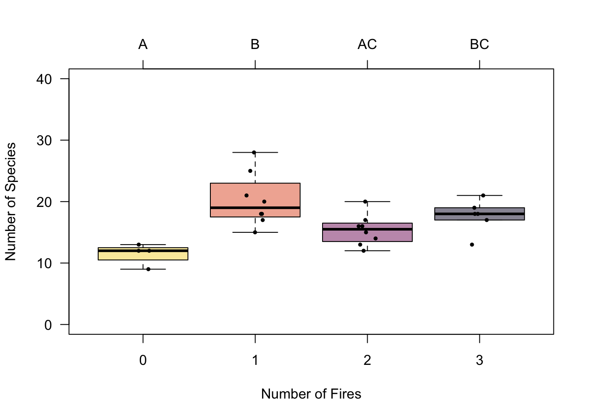
a3 <- aov(simpson ~ treatment, data = understory)
summary(a3) Df Sum Sq Mean Sq F value Pr(>F)
treatment 3 0.5258 0.17527 34.17 1.86e-08 ***
Residuals 22 0.1129 0.00513
---
Signif. codes: 0 '***' 0.001 '**' 0.01 '*' 0.05 '.' 0.1 ' ' 1TukeyHSD(a3) Tukey multiple comparisons of means
95% family-wise confidence level
Fit: aov(formula = simpson ~ treatment, data = understory)
$treatment
diff lwr upr p adj
1-0 0.42002662 0.29823784 0.54181540 0.0000000
2-0 0.34487983 0.22309105 0.46666861 0.0000004
3-0 0.39324381 0.26486716 0.52162046 0.0000001
2-1 -0.07514679 -0.17458692 0.02429333 0.1847186
3-1 -0.02678281 -0.13419042 0.08062480 0.8988853
3-2 0.04836398 -0.05904363 0.15577159 0.6027036plot(simpson~treatment,
data = understory,
col = pal2,
las = 1,
ylim = c(0,1),
xlab = "Number of Fires",
ylab = "Simpson Diversity Index")
axis(3,at = 1:4, labels = c("A", "B", "B", "B"))
stripchart(simpson~treatment, data=understory,
vertical = TRUE,
method = "jitter",
add = TRUE,
pch = 20,
cex = 0.75)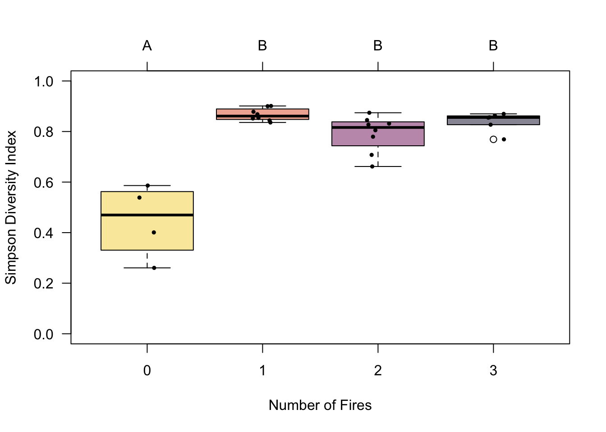
aggregate(understory$Richness, by = list(understory$treatment), FUN = mean) Group.1 x
1 0 11.50000
2 1 20.25000
3 2 15.37500
4 3 17.66667aggregate(understory$Richness, by = list(understory$treatment), FUN = se)[,2] *1.96 ## confidence interval[1] 1.697410 3.003481 1.734885 2.127099summary(a2) Df Sum Sq Mean Sq F value Pr(>F)
treatment 3 228.3 76.11 7.621 0.00113 **
Residuals 22 219.7 9.99
---
Signif. codes: 0 '***' 0.001 '**' 0.01 '*' 0.05 '.' 0.1 ' ' 1TukeyHSD(a2) Tukey multiple comparisons of means
95% family-wise confidence level
Fit: aov(formula = Richness ~ treatment, data = understory)
$treatment
diff lwr upr p adj
1-0 8.750000 3.3762465 14.1237535 0.0009042
2-0 3.875000 -1.4987535 9.2487535 0.2174529
3-0 6.166667 0.5022331 11.8311002 0.0295387
2-1 -4.875000 -9.2626514 -0.4873486 0.0257749
3-1 -2.583333 -7.3225385 2.1558718 0.4466610
3-2 2.291667 -2.4475385 7.0308718 0.5467547aggregate(understory$simpson, by = list(understory$treatment), FUN = mean) Group.1 x
1 0 0.4466045
2 1 0.8666311
3 2 0.7914843
4 3 0.8398483aggregate(understory$simpson, by = list(understory$treatment), FUN = se)[,2] *1.96 ## confidence interval[1] 0.14387004 0.01717825 0.05026192 0.03008313summary(a3) Df Sum Sq Mean Sq F value Pr(>F)
treatment 3 0.5258 0.17527 34.17 1.86e-08 ***
Residuals 22 0.1129 0.00513
---
Signif. codes: 0 '***' 0.001 '**' 0.01 '*' 0.05 '.' 0.1 ' ' 1TukeyHSD(a3) Tukey multiple comparisons of means
95% family-wise confidence level
Fit: aov(formula = simpson ~ treatment, data = understory)
$treatment
diff lwr upr p adj
1-0 0.42002662 0.29823784 0.54181540 0.0000000
2-0 0.34487983 0.22309105 0.46666861 0.0000004
3-0 0.39324381 0.26486716 0.52162046 0.0000001
2-1 -0.07514679 -0.17458692 0.02429333 0.1847186
3-1 -0.02678281 -0.13419042 0.08062480 0.8988853
3-2 0.04836398 -0.05904363 0.15577159 0.6027036rm(a2);rm(a3)Figure 4: Rank Abundance Curves
layout(matrix(c(1,1,1,2,3,4), 2, 3, byrow = T))
par(oma = c(13,2.5,1,1))
layout.show(n=4) 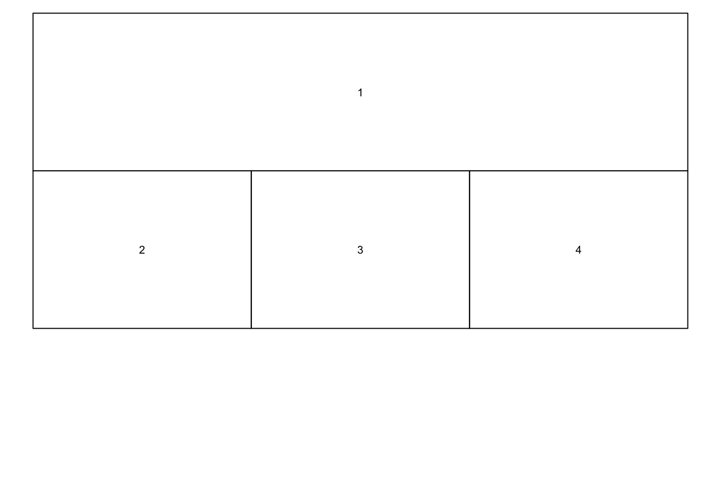
## First panel is for functional groups
understory_long_FG <- understory_long %>%
group_by(PLOT, FG) %>%
summarise(plot.tot = sum(plotavg)) ## summarizing by transect then by plot; taking the average cover 1m squared`summarise()` has grouped output by 'PLOT'. You can override using the
`.groups` argument.understory_long_FG <- as.data.frame(understory_long_FG) ## converting the tibble to a data frame
understory_wide_FG <- reshape(understory_long_FG, idvar = "PLOT", timevar = "FG", direction = "wide") ## reshaping the data
rownames(understory_wide_FG) <- understory_wide_FG$PLOT ## renaming rows to be PLOT
understory_wide_FG$PLOT <- NULL ## removing nonspecies column
colnames(understory_wide_FG) <- sub("plot.tot.", "", colnames(understory_wide_FG)) ## changing column names to be species codes
table(colnames(understory_wide_FG)) ## looking at the species, will correct the ones I need to
forb graminoid Lichen Moss
1 1 1 1
seedless vascular shrub
1 1 rownames(understory_wide_FG) <- understory_plots$trt_site[match(rownames(understory_wide_FG), understory_plots$plot)]
understory_wide_FG <- understory_wide_FG[order(rownames(understory_wide_FG)),]
b0 <- as.data.frame(understory_wide_FG[grep("0_", rownames(understory_wide_FG)),])
b1 <- as.data.frame(understory_wide_FG[grep("1_", rownames(understory_wide_FG)),])
b2 <- as.data.frame(understory_wide_FG[grep("2_", rownames(understory_wide_FG)),])
b3 <- as.data.frame(understory_wide_FG[grep("3_", rownames(understory_wide_FG)),])
burn.sum <- data.frame(cov0 = apply(b0,2, mean),
cov1 = apply(b1,2, mean),
cov2 = apply(b2,2, mean),
cov3 = apply(b3,2, mean))
## First panel is a rank abundance curve of the functional groups from the no burns communities
burn.0 <- burn.sum[rev(order(burn.sum$cov0)),]
burn.0 <- t(burn.0)
colnames(burn.0)[1] "Moss" "shrub" "Lichen"
[4] "seedless vascular" "forb" "graminoid" st.dev.1 <- data.frame(species = NA, se0 = NA, se1 = NA, se2 = NA, se3 = NA) ## creating a dataframe to hold SE values, variable naming is innacurate, not calculating SD
st.dev.1[1,1] <- "Moss"
st.dev.1[1,2] <- se(b0$Moss)*1.96
st.dev.1[1,3] <- se(b1$Moss)*1.96
st.dev.1[1,4] <- se(b2$Moss)*1.96
st.dev.1[1,5] <- se(b3$Moss)*1.96
st.dev.1[2,1] <- "Shrub"
st.dev.1[2,2] <- se(b0$shrub)*1.96
st.dev.1[2,3] <- se(b1$shrub)*1.96
st.dev.1[2,4] <- se(b2$shrub)*1.96
st.dev.1[2,5] <- se(b3$shrub)*1.96
st.dev.1[3,1] <- "Lichen"
st.dev.1[3,2] <- se(b0$Lichen)*1.96
st.dev.1[3,3] <- se(b1$Lichen)*1.96
st.dev.1[3,4] <- se(b2$Lichen)*1.96
st.dev.1[3,5] <- se(b3$Lichen)*1.96
st.dev.1[4,1] <- "Seedless \n Vascular"
st.dev.1[4,2] <- se(b0$`seedless vascular`) *1.96
st.dev.1[4,3] <- se(b1$`seedless vascular`) *1.96
st.dev.1[4,4] <- se(b2$`seedless vascular`)*1.96
st.dev.1[4,5] <- se(b3$`seedless vascular`) *1.96
st.dev.1[5,1] <- "Forb"
st.dev.1[5,2] <- se(b0$forb)*1.96
st.dev.1[5,3] <- se(b1$forb)*1.96
st.dev.1[5,4] <- se(b2$forb)*1.96
st.dev.1[5,5] <- se(b3$forb)*1.96
st.dev.1[6,1] <- "Graminoid"
st.dev.1[6,2] <- se(b0$graminoid)*1.96
st.dev.1[6,3] <- se(b1$graminoid)*1.96
st.dev.1[6,4] <- se(b2$graminoid)*1.96
st.dev.1[6,5] <- se(b3$graminoid)*1.96
rownames(st.dev.1) <- st.dev.1[,1] ## making species the rownames
st.dev.1 <- as.matrix(st.dev.1[,-1]) ## turning into a matrix without species col
st.dev.1 <- t(st.dev.1) ## transposing the matrix
ze_bar <- barplot(burn.0,
col= pal ,
border="black",
font.axis= 4,
# cex.names = 1.5,
cex.axis = 1.5,
names.arg = c("","","","","",""),
las = 1,
ylim = c(0,100),
beside=T,
xlab="",
font.lab=2)
error.bar(ze_bar,burn.0, st.dev.1)
axis(1, pos = -10, at=c(3,8,13,18,23,28), tick = F, cex.axis = 1.5, font = 4, labels=c('Moss','Shrub','Lichen',"Seedless \n Vascular", 'Forb', "Graminoid"))
mtext(side = 2, line = 3.5, cex = 1.5, "Average Cover (%)")
mtext(side = 3, line = .5, cex = 1.5,font = 2, "Functional Groups")
legend("top",
legend=c("No Fire","1 Fire","2 Fires","3 Fires"),
col=pal,
ncol = 4,
pt.cex=2,
text.font = 2,
cex = 1.5,
pch=15,
bty = "n")
## Panels 2-4 are a rank abundance curves of the top 10 species of each burn to show turnover
b0 <- as.data.frame(understory_FireMat[grep("0_", rownames(understory_FireMat)),])
b1 <- as.data.frame(understory_FireMat[grep("1_", rownames(understory_FireMat)),])
b2 <- as.data.frame(understory_FireMat[grep("2_", rownames(understory_FireMat)),])
b3 <- as.data.frame(understory_FireMat[grep("3_", rownames(understory_FireMat)),])
burn.sum <- data.frame(cov0 = apply(b0,2, mean),
cov1 = apply(b1,2, mean),
cov2 = apply(b2,2, mean),
cov3 = apply(b3,2, mean))
burn.0 <- burn.sum[rev(order(burn.sum$cov0)),c(1,2)]
burn.1 <- burn.sum[rev(order(burn.sum$cov1)),c(2,3)]
burn.2 <- burn.sum[rev(order(burn.sum$cov2)),c(3,4)]
top10.0 <- burn.0[1:10,] ## pulling out the top 10 species for each fire turnover
top10.1 <- burn.1[1:10,]
top10.2 <- burn.2[1:10,]
top10.0 <- t(top10.0) ## transposing to format the df properly
top10.1 <- t(top10.1)
top10.2 <- t(top10.2)
colnames(top10.0) [1] "Hylocomium.splendens" "Vaccinium.viginosum"
[3] "Ledum.groenlandicum" "Pleurozoum.scherberi"
[5] "Oxycoccus.microcarpos" "Pelitigera.neopolydacta"
[7] "Cladonia.rangiferina" "Equisetum.scripotes"
[9] "Rosa.acicularis" "Peltigera.apthosa" colnames(top10.0) <- c("Hylocomium splendens",
"Vaccinium viginosum" ,
"Ledum groenlandicum" ,
"Pleurozoum scherberi",
"Oxycoccus microcarpos" ,
"Pelitigera neopolydacta",
"Cladonia rangiferina",
"Equisetum scripotes" ,
"Rosa acicularis",
"Peltigera apthosa")
colnames(top10.1) [1] "Ledum.decumbens" "Poa.arctea" "Vaccinium.viginosum"
[4] "Equisetum.sylvaticum" "Ceratodon.purpureus" "Salix"
[7] "Polytrichum.strictum" "Cladonia.deformis" "Ledum.groenlandicum"
[10] "Luzula.arcuata" colnames(top10.1) <- c("Ledum decumbens",
"Poa arctea" ,
"Vaccinium viginosum" ,
"Equisetum sylvaticum",
"Ceratodon purpureus" ,
"Salix spp.",
"Polytrichum strictum",
"Cladonia deformis" ,
"Ledum groenlandicum",
"Luzula arcuata")
colnames(top10.2) [1] "Equisetum.sylvaticum" "Ceratodon.purpureus" "Poa.pratensis"
[4] "Vaccinium.viginosum" "Vaccinium.vulcanorum" "Equisetum.arvense"
[7] "Polytrichum.commune" "Polytrichum.strictum" "Dicranium.antifolium"
[10] "Salix" colnames(top10.2) <- c("Equisetum sylvaticum",
"Ceratodon purpureus" ,
"Poa pratensis" ,
"Vaccinium viginosum",
"Vaccinium vulcanorum" ,
"Equisetum arvense",
"Polytrichum commune",
"Polytrichum strictum" ,
"Dicranium antifolium",
"Salix spp.")
## unburned
st.dev.0 <- data.frame(species = NA, se0 = NA, se1 = NA) ## creating a dataframe to hold SE values, variable naming is innacurate, not calculating SD
st.dev.0[1,1] <- "Hylocomium splendens" ## species name
st.dev.0[1,2] <- se(b0$Hylocomium.splendens)*1.96
st.dev.0[1,3] <- se(b1$Hylocomium.splendens)*1.96
st.dev.0[2,1] <- "Vaccinium viginosum"
st.dev.0[2,2] <- se(b0$Vaccinium.viginosum)*1.96
st.dev.0[2,3] <- se(b1$Vaccinium.viginosum)*1.96
st.dev.0[3,1] <- "Ledum groenlandicum"
st.dev.0[3,2] <- se(b0$Ledum.groenlandicum)*1.96
st.dev.0[3,3] <- se(b1$Ledum.groenlandicum)*1.96
st.dev.0[4,1] <- "Pleurozoum scherberi"
st.dev.0[4,2] <- se(b0$Pleurozoum.scherberi)*1.96
st.dev.0[4,3] <- se(b1$Pleurozoum.scherberi)*1.96
st.dev.0[5,1] <- "Oxycoccus microcarpos"
st.dev.0[5,2] <- se(b0$Oxycoccus.microcarpos)*1.96
st.dev.0[5,3] <- se(b1$Oxycoccus.microcarpos)*1.96
st.dev.0[6,1] <- "Pelitigera neopolydacta"
st.dev.0[6,2] <- se(b0$Pelitigera.neopolydacta)*1.96
st.dev.0[6,3] <- se(b1$Pelitigera.neopolydacta)*1.96
st.dev.0[7,1] <- "Cladonia rangiferina"
st.dev.0[7,2] <- se(b0$Cladonia.rangiferina)*1.96
st.dev.0[7,3] <- se(b1$Cladonia.rangiferina)*1.96
st.dev.0[8,1] <- "Equisetum scripotes"
st.dev.0[8,2] <- se(b0$Equisetum.scripotes)*1.96
st.dev.0[8,3] <- se(b1$Equisetum.scripotes)*1.96
st.dev.0[9,1] <- "Rosa acicularis"
st.dev.0[9,2] <- se(b0$Rosa.acicularis)*1.96
st.dev.0[9,3] <- se(b1$Rosa.acicularis)*1.96
st.dev.0[10,1] <- "Peltigera apthosa"
st.dev.0[10,2] <- se(b0$Peltigera.apthosa)*1.96
st.dev.0[10,3] <- se(b1$Peltigera.apthosa)*1.96
rownames(st.dev.0) <- st.dev.0[,1] ## making species the rownames
st.dev.0 <- as.matrix(st.dev.0[,-1]) ## turning into a matrix without species col
st.dev.0 <- t(st.dev.0) ## transposing the matrix
## 1 fire
st.dev.1 <- data.frame(species = NA, se1 = NA, se2 = NA) ## creating a dataframe to hold SE values, variable naming is innacurate, not calculating SD
st.dev.1[1,1] <- "Ledum decumbens" ## species name
st.dev.1[1,2] <- se(b1$Ledum.decumbens)*1.96
st.dev.1[1,3] <- se(b2$Ledum.decumbens)*1.96
st.dev.1[2,1] <- "Poa arctea"
st.dev.1[2,2] <- se(b1$Poa.arctea)*1.96
st.dev.1[2,3] <- se(b2$Poa.arctea)*1.96
st.dev.1[3,1] <- "Vaccinium viginosum"
st.dev.1[3,2] <- se(b1$Vaccinium.viginosum)*1.96
st.dev.1[3,3] <- se(b2$Vaccinium.viginosum)*1.96
st.dev.1[4,1] <- "Equisetum sylvaticum"
st.dev.1[4,2] <- se(b1$Equisetum.sylvaticum)*1.96
st.dev.1[4,3] <- se(b2$Equisetum.sylvaticum)*1.96
st.dev.1[5,1] <- "Ceratodon purpureus"
st.dev.1[5,2] <- se(b1$Ceratodon.purpureus)*1.96
st.dev.1[5,3] <- se(b2$Ceratodon.purpureus)*1.96
st.dev.1[6,1] <- "Salix spp."
st.dev.1[6,2] <- se(b1$Salix)*1.96
st.dev.1[6,3] <- se(b2$Salix)*1.96
st.dev.1[7,1] <- "Polytrichum strictum"
st.dev.1[7,2] <- se(b1$Polytrichum.strictum)*1.96
st.dev.1[7,3] <- se(b2$Polytrichum.strictum)*1.96
st.dev.1[8,1] <- "Cladonia deformis"
st.dev.1[8,2] <- se(b1$Cladonia.deformis)*1.96
st.dev.1[8,3] <- se(b2$Cladonia.deformis)*1.96
st.dev.1[9,1] <- "Ledum groenlandicum"
st.dev.1[9,2] <- se(b1$Ledum.groenlandicum)*1.96
st.dev.1[9,3] <- se(b2$Ledum.groenlandicum)*1.96
st.dev.1[10,1] <- "Luzula arcuata"
st.dev.1[10,2] <- se(b1$Luzula.arcuata)*1.96
st.dev.1[10,3] <- se(b2$Luzula.arcuata)*1.96
rownames(st.dev.1) <- st.dev.1[,1] ## making species the rownames
st.dev.1 <- as.matrix(st.dev.1[,-1]) ## turning into a matrix without species col
st.dev.1 <- t(st.dev.1) ## transposing the matrix
## 2 fire
st.dev.2 <- data.frame(species = NA, se2 = NA, se3 = NA) ## creating a dataframe to hold SE values, variable naming is innacurate, not calculating SD
st.dev.2[1,1] <- "Equisetum sylvaticum" ## species name
st.dev.2[1,2] <- se(b2$Equisetum.sylvaticum)*1.96
st.dev.2[1,3] <- se(b3$Equisetum.sylvaticum)*1.96
st.dev.2[2,1] <- "Ceratodon purpureus"
st.dev.2[2,2] <- se(b2$Ceratodon.purpureus)*1.96
st.dev.2[2,3] <- se(b3$Ceratodon.purpureus)*1.96
st.dev.2[3,1] <- "Poa pratensis"
st.dev.2[3,2] <- se(b2$Poa.pratensis)*1.96
st.dev.2[3,3] <- se(b3$Poa.pratensis)*1.96
st.dev.2[4,1] <- "Vaccinium viginosum"
st.dev.2[4,2] <- se(b2$Vaccinium.viginosum)*1.96
st.dev.2[4,3] <- se(b3$Vaccinium.viginosum)*1.96
st.dev.2[5,1] <- "Vaccinium vulcanorum"
st.dev.2[5,2] <- se(b2$Vaccinium.vulcanorum)*1.96
st.dev.2[5,3] <- se(b3$Vaccinium.vulcanorum)*1.96
st.dev.2[6,1] <- "Equisetum arvense"
st.dev.2[6,2] <- se(b2$Equisetum.arvense)*1.96
st.dev.2[6,3] <- se(b3$Equisetum.arvense)*1.96
st.dev.2[7,1] <- "Polytrichum commune"
st.dev.2[7,2] <- se(b2$Polytrichum.commune)*1.96
st.dev.2[7,3] <- se(b3$Polytrichum.commune)*1.96
st.dev.2[8,1] <- "Polytrichum strictum"
st.dev.2[8,2] <- se(b2$Polytrichum.strictum)*1.96
st.dev.2[8,3] <- se(b3$Polytrichum.strictum)*1.96
st.dev.2[9,1] <- "Dicranium antifolium"
st.dev.2[9,2] <- se(b2$Dicranium.antifolium)*1.96
st.dev.2[9,3] <- se(b3$Dicranium.antifolium)*1.96
st.dev.2[10,1] <- "Salix spp."
st.dev.2[10,2] <- se(b2$Salix)*1.96
st.dev.2[10,3] <- se(b3$Salix)*1.96
rownames(st.dev.2) <- st.dev.2[,1] ## making species the rownames
st.dev.2 <- as.matrix(st.dev.2[,-1]) ## turning into a matrix without species col
st.dev.2 <- t(st.dev.2) ## transposing the matrix
ze_bar.0 <- barplot(top10.0,
col= pal[1:2] ,
border="black",
font.axis= 4,
cex.names = 1.75,
cex.axis = 1.5,
las = 2,
ylim = c(0,100),
beside=T,
xlab="",
font.lab=2)
mtext(side = 2, line = 3.5, cex = 1.5, "Average Cover (%)")
error.bar(ze_bar.0,top10.0, st.dev.0)
mtext(side = 3, line = .5, cex = 1.5, font = 2, "No Fire - One Fire")
legend(5,100,
legend=c("No Fire","1 Fire"),
col=pal,
ncol = 4,
pt.cex= 2,
cex = 1.5,
pch=15,
text.font = 2,
bty = "n")
ze_bar.1 <- barplot(top10.1,
col= pal[2:3] ,
border="black",
font.axis= 4,
cex.names = 1.75,
cex.axis = 1.5,
las = 2,
ylim = c(0,100),
beside=T,
xlab="",
font.lab=2)
# mtext(side = 2, line = 3, cex = 1.5, "Average Cover (%)")
error.bar(ze_bar.1,top10.1, st.dev.1)
mtext(side = 3, line = .5, cex = 1.5,font = 2,"One Fire - Two Fire")
legend(5,100,
legend=c("1 Fire","2 Fires"),
col=pal[2:3],
ncol = 4,
pt.cex= 2,
cex = 1.5,
text.font = 2,
pch=15,
bty = "n")
ze_bar.2 <- barplot(top10.2,
col= pal[3:4] ,
border="black",
font.axis= 4,
cex.names = 1.75,
cex.axis = 1.5,
las = 2,
ylim = c(0,100),
beside=T,
xlab="",
font.lab=2)
# mtext(side = 2, line = 3, cex = 1.5, "Average Cover (%)")
error.bar(ze_bar.2,top10.2, st.dev.2)
mtext(side = 3, line = .5, cex = 1.5, font = 2, "Two Fire - Three Fire")
legend(5,100,
legend=c("2 Fires","3 Fires"),
col=pal[3:4],
ncol = 4,
pt.cex=2,
text.font = 2,
cex = 1.5,
pch=15,
bty = "n")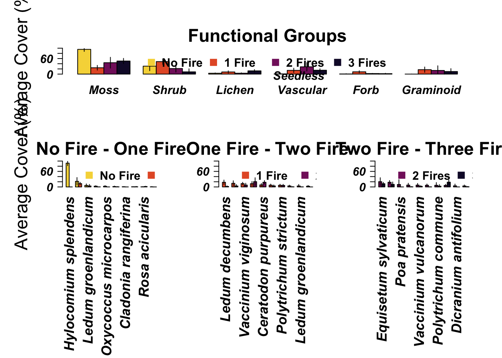
length(unique(understory_long$species)) ## 67 unique species[1] 67str(understory_long)'data.frame': 1742 obs. of 4 variables:
$ PLOT : int 7 7 7 7 7 7 7 7 7 7 ...
$ species: chr "Achillea.millefolium" "Alnus.virdis" "Arnica.alpuna" "Aulacpomnium.palustre" ...
$ plotavg: num 0 0 0 0 0 0 5 3.75 7.75 0 ...
$ FG : chr "forb" "shrub" "forb" "Moss" ...Genera <- understory_long %>%
separate(species, into = c("pre", "post")) %>%
pull("pre") ## pulling out the genus name for each speciesWarning: Expected 2 pieces. Additional pieces discarded in 26 rows [53, 120, 187, 254,
321, 388, 455, 522, 589, 656, 723, 790, 857, 924, 991, 1058, 1125, 1192, 1259,
1326, ...].Warning: Expected 2 pieces. Missing pieces filled with `NA` in 26 rows [59, 126, 193,
260, 327, 394, 461, 528, 595, 662, 729, 796, 863, 930, 997, 1064, 1131, 1198,
1265, 1332, ...].length(unique(Genera)) ## 41 unique genera[1] 41table(understory_long$FG)
forb graminoid Lichen Moss
260 130 364 520
seedless vascular shrub
78 390 length(unique(understory_long$species[understory_long$FG == "forb"])) ## 10 forbs[1] 10(length(unique(understory_long$species[understory_long$FG == "forb"]))/length(unique(understory_long$species)))*100[1] 14.92537## 14.93 % of species are forbs
length(unique(understory_long$species[understory_long$FG == "graminoid"])) ## 5 graminoids[1] 5(length(unique(understory_long$species[understory_long$FG == "graminoid"]))/length(unique(understory_long$species)))*100[1] 7.462687## 7.46 % of species are graminoids
length(unique(understory_long$species[understory_long$FG == "Lichen"])) ## 14 lichens[1] 14(length(unique(understory_long$species[understory_long$FG == "Lichen"]))/length(unique(understory_long$species)))*100[1] 20.89552## 20.90 % of species are lichens
length(unique(understory_long$species[understory_long$FG == "Moss"])) ## 20 mosses[1] 20(length(unique(understory_long$species[understory_long$FG == "Moss"]))/length(unique(understory_long$species)))*100[1] 29.85075## 29.85 % of species are mosses
length(unique(understory_long$species[understory_long$FG == "seedless vascular"])) ## 3 seedless vascular species[1] 3(length(unique(understory_long$species[understory_long$FG == "seedless vascular"]))/length(unique(understory_long$species)))*100[1] 4.477612## 4.48 % of species are seedless vascular
length(unique(understory_long$species[understory_long$FG == "shrub"])) ## 15 shrubs[1] 15(length(unique(understory_long$species[understory_long$FG == "shrub"]))/length(unique(understory_long$species)))*100[1] 22.38806## 22.39 % of species are shrubsCommunity Turnover
turnover = disappeared + appeared / total number of species (in each community)
understory_turnover <- understory_long[understory_long$plotavg != 0,]
NoFireComm <- unique(understory_turnover$species[understory_turnover$PLOT == 11 | understory_turnover$PLOT == 58 | understory_turnover$PLOT == 10 | understory_turnover$PLOT == 44])
OneFireComm <- unique(understory_turnover$species[understory_turnover$PLOT == 12 | understory_turnover$PLOT == 64 | understory_turnover$PLOT == 65 | understory_turnover$PLOT == 52 | understory_turnover$PLOT == 41 | understory_turnover$PLOT == 48 |understory_turnover$PLOT == 42 | understory_turnover$PLOT == 50])
TwoFireComm <- unique(understory_turnover$species[understory_turnover$PLOT == 32 | understory_turnover$PLOT == 39 | understory_turnover$PLOT == 56 | understory_turnover$PLOT == 57 | understory_turnover$PLOT == 47 | understory_turnover$PLOT == 16 |understory_turnover$PLOT == 8 | understory_turnover$PLOT == 40])
ThreeFireComm <- unique(understory_turnover$species[understory_turnover$PLOT == 37 | understory_turnover$PLOT == 15 | understory_turnover$PLOT == 55 | understory_turnover$PLOT == 54 | understory_turnover$PLOT == 14 | understory_turnover$PLOT == 7])
`%notin%` <- Negate(`%in%`)
length(which(NoFireComm %notin% OneFireComm == TRUE)) ## 7 species disappeared[1] 7length(which(OneFireComm %notin% NoFireComm == TRUE)) ## 31 species appeared [1] 31((length(which(NoFireComm %notin% OneFireComm == TRUE))+length(which(OneFireComm %notin% NoFireComm == TRUE)))/(length(NoFireComm)+length(OneFireComm)))*100 [1] 61.29032## 61.29 % turnover rate from no fire from one fire
length(which(OneFireComm %notin% TwoFireComm == TRUE)) ## 18 species disappeared[1] 18length(which(TwoFireComm %notin% OneFireComm == TRUE)) ## 15 species appeared [1] 15((length(which(OneFireComm %notin% TwoFireComm == TRUE))+length(which(TwoFireComm %notin% OneFireComm == TRUE)))/(length(OneFireComm)+length(TwoFireComm)))*100 [1] 39.75904## 39.76 % turnover rate from one fire to two fires
length(which(TwoFireComm %notin% ThreeFireComm == TRUE)) ## 17 species disappeared[1] 17length(which(ThreeFireComm %notin% TwoFireComm == TRUE)) ## 8 species appeared [1] 8((length(which(TwoFireComm %notin% ThreeFireComm == TRUE))+length(which(ThreeFireComm %notin% TwoFireComm == TRUE)))/(length(TwoFireComm)+length(ThreeFireComm)))*100 [1] 35.21127## 35.21 % turnover rate from two fires to three fires
## adding the full set of pairwise comparisons
length(which(NoFireComm %notin% ThreeFireComm == TRUE)) ## 9 species disappeared[1] 9length(which(ThreeFireComm %notin% NoFireComm == TRUE)) ## 21 species appeared [1] 21((length(which(NoFireComm %notin% ThreeFireComm == TRUE))+length(which(ThreeFireComm %notin% NoFireComm == TRUE)))/(length(NoFireComm)+length(ThreeFireComm)))*100 [1] 60## 60.00 % turnover rate from no fire to three fires
length(which(NoFireComm %notin% TwoFireComm == TRUE)) ## 9 species disappeared[1] 9length(which(TwoFireComm %notin% NoFireComm == TRUE)) ## 30 species appeared [1] 30((length(which(NoFireComm %notin% TwoFireComm == TRUE))+length(which(TwoFireComm %notin% NoFireComm == TRUE)))/(length(NoFireComm)+length(TwoFireComm)))*100 [1] 66.10169## 66.10 % turnover rate from no fire to two fires
length(which(OneFireComm %notin% ThreeFireComm == TRUE)) ## 19 species disappeared[1] 19length(which(ThreeFireComm %notin% OneFireComm == TRUE)) ## 7 species appeared [1] 7((length(which(OneFireComm %notin% ThreeFireComm == TRUE))+length(which(ThreeFireComm %notin% OneFireComm == TRUE)))/(length(OneFireComm)+length(ThreeFireComm)))*100 [1] 35.13514## 35.14 % turnover rate from one fire to three fires
rm(b0);rm(b1);rm(b2);rm(b3);rm(burn.0);rm(burn.1);rm(burn.2);rm(burn.sum)
rm(st.dev.0);rm(st.dev.1);rm(st.dev.2);rm(top10.0);rm(top10.1);rm(top10.2)
rm(error.bar);rm(se);rm(`%notin%`);rm(understory_turnover);rm(understory_long_FG);rm(understory_wide_FG)
rm(NoFireComm);rm(OneFireComm);rm(TwoFireComm);rm(ThreeFireComm);rm(understory_FireMat)
rm(ze_bar);rm(ze_bar.0);rm(ze_bar.1);rm(ze_bar.2);rm(pal);rm(pal2);rm(Genera)Table 1: GLM Results
env <- read.csv("site_attributes.csv")
soil <- read.csv("org_depth.csv")
env <- env[env$SITE != "STEESE",]
soil <- soil[soil$SITE != "STEESE",]
soil <- soil %>%
group_by(PLOT) %>%
summarise(ORG_DEPTH_cm = mean(ORG_DEPTH_cm))
soil <- as.data.frame(soil) ## converting the tibble to a data frame
soil$PLOT[soil$PLOT == "7_3"] <- "07_3"
soil$PLOT[soil$PLOT == "8_2"] <- "08_2"
env$SITECODE[env$SITECODE == "7_3"] <- "07_3"
env$SITECODE[env$SITECODE == "8_2"] <- "08_2"
env <- env[order(env$SITECODE),]
soil <- soil[order(soil$PLOT),]
understory <- cbind(understory, env)
understory <- cbind(understory, soil)
understory <- understory[,c(2:4,10,13,15)]
understory.burned <- understory[understory$treatment != 0,]
par(mfrow = c(1,1))
## writing a series of models and then have to make sure the effect sizes are standardized
## three for richness
m1 <- glm(Richness ~ SLOPE,
data = understory.burned,
family = poisson(link = "log"))
summary(m1)
Call:
glm(formula = Richness ~ SLOPE, family = poisson(link = "log"),
data = understory.burned)
Coefficients:
Estimate Std. Error z value Pr(>|z|)
(Intercept) 2.78666 0.14144 19.702 <2e-16 ***
SLOPE 0.01309 0.01888 0.694 0.488
---
Signif. codes: 0 '***' 0.001 '**' 0.01 '*' 0.05 '.' 0.1 ' ' 1
(Dispersion parameter for poisson family taken to be 1)
Null deviance: 16.539 on 21 degrees of freedom
Residual deviance: 16.062 on 20 degrees of freedom
AIC: 123.56
Number of Fisher Scoring iterations: 4pseudo.R.squared(m1)[1] 0.02885099plot(residuals(m1)); abline(h = 0, col = "red", lwd = 2, lty = 2)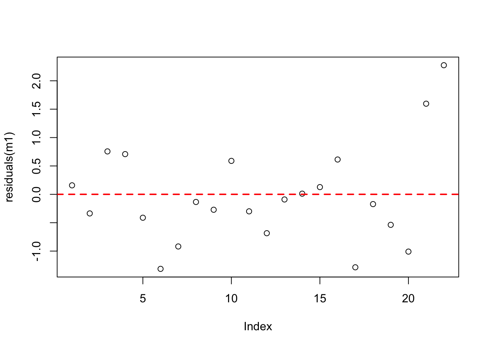
qqnorm(residuals(m1), pch = 16, cex = .75, col = rgb(0,0,0,0.75))
qqline(residuals(m1), col = "red", lwd = 2, lty = 2)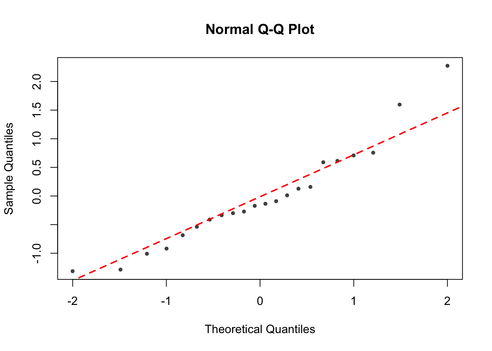
m2 <- glm(Richness ~ SOLAR,
data = understory.burned,
family = poisson(link = "log"))
summary(m2)
Call:
glm(formula = Richness ~ SOLAR, family = poisson(link = "log"),
data = understory.burned)
Coefficients:
Estimate Std. Error z value Pr(>|z|)
(Intercept) 1.478e+01 7.207e+00 2.051 0.0403 *
SOLAR -1.973e-05 1.195e-05 -1.651 0.0987 .
---
Signif. codes: 0 '***' 0.001 '**' 0.01 '*' 0.05 '.' 0.1 ' ' 1
(Dispersion parameter for poisson family taken to be 1)
Null deviance: 16.539 on 21 degrees of freedom
Residual deviance: 13.816 on 20 degrees of freedom
AIC: 121.32
Number of Fisher Scoring iterations: 4pseudo.R.squared(m2) [1] 0.164651plot(residuals(m2)); abline(h = 0, col = "red", lwd = 2, lty = 2)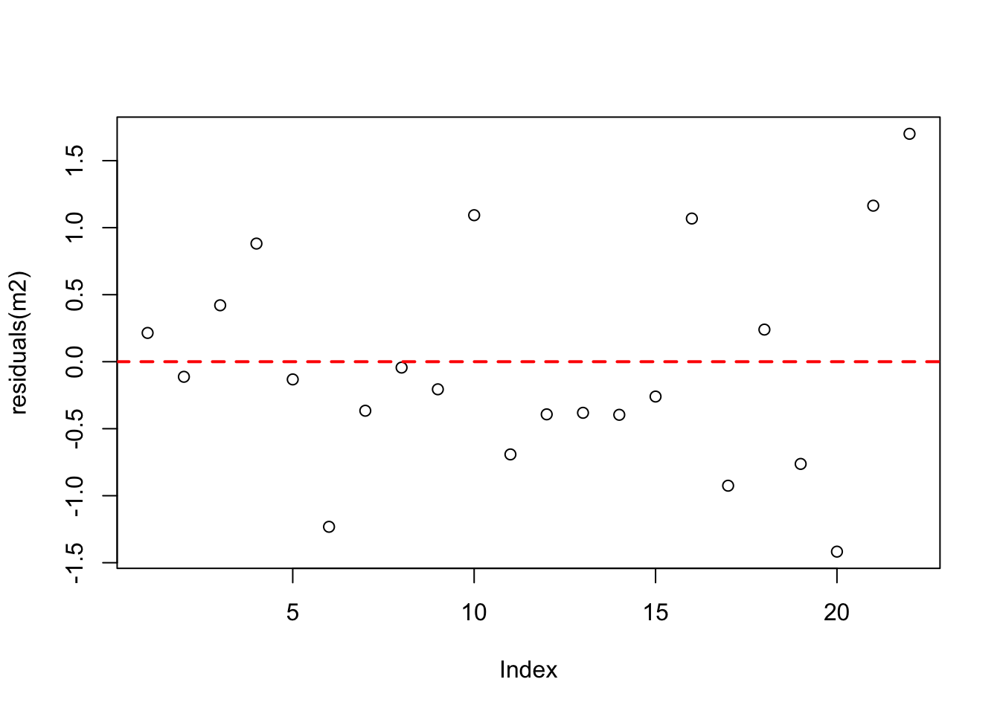
qqnorm(residuals(m2), pch = 16, cex = .75, col = rgb(0,0,0,0.75))
qqline(residuals(m2), col = "red", lwd = 2, lty = 2)
m3 <- glm(Richness ~ ORG_DEPTH_cm,
data = understory.burned,
family = poisson(link = "log"))
summary(m3)
Call:
glm(formula = Richness ~ ORG_DEPTH_cm, family = poisson(link = "log"),
data = understory.burned)
Coefficients:
Estimate Std. Error z value Pr(>|z|)
(Intercept) 2.857354 0.087487 32.661 <2e-16 ***
ORG_DEPTH_cm 0.005446 0.019043 0.286 0.775
---
Signif. codes: 0 '***' 0.001 '**' 0.01 '*' 0.05 '.' 0.1 ' ' 1
(Dispersion parameter for poisson family taken to be 1)
Null deviance: 16.539 on 21 degrees of freedom
Residual deviance: 16.458 on 20 degrees of freedom
AIC: 123.96
Number of Fisher Scoring iterations: 4pseudo.R.squared(m3)[1] 0.00491406plot(residuals(m3)); abline(h = 0, col = "red", lwd = 2, lty = 2)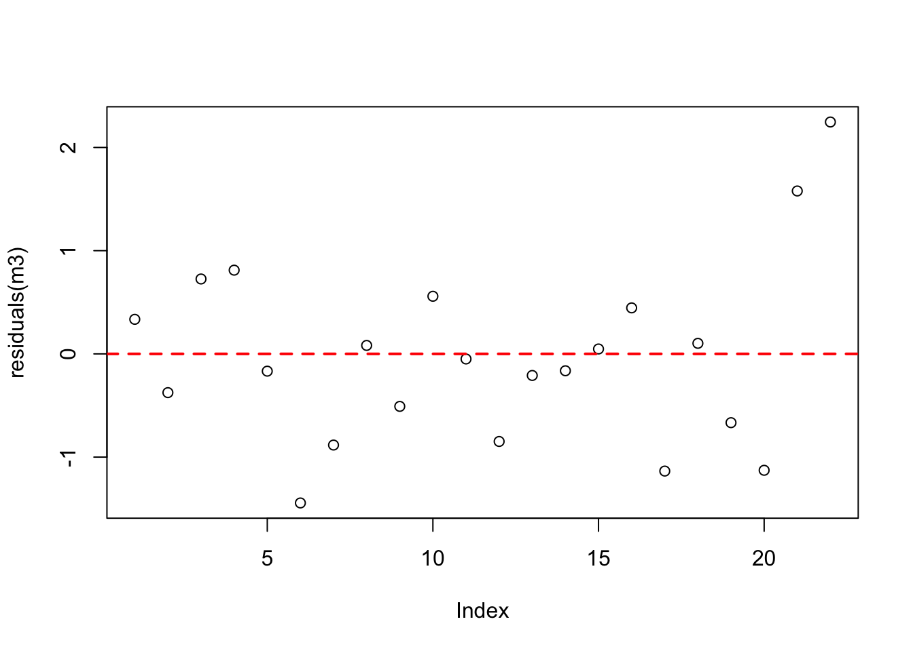
qqnorm(residuals(m3), pch = 16, cex = .75, col = rgb(0,0,0,0.75))
qqline(residuals(m3), col = "red", lwd = 2, lty = 2)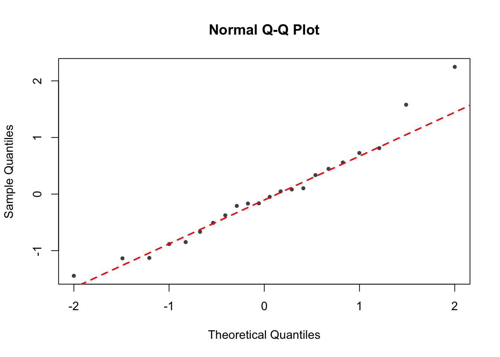
## three for diversity
m4 <- glm(simpson ~ SLOPE,
data = understory.burned)
summary(m4)
Call:
glm(formula = simpson ~ SLOPE, data = understory.burned)
Coefficients:
Estimate Std. Error t value Pr(>|t|)
(Intercept) 0.777616 0.033096 23.50 4.89e-16 ***
SLOPE 0.007878 0.004476 1.76 0.0937 .
---
Signif. codes: 0 '***' 0.001 '**' 0.01 '*' 0.05 '.' 0.1 ' ' 1
(Dispersion parameter for gaussian family taken to be 0.003086609)
Null deviance: 0.071291 on 21 degrees of freedom
Residual deviance: 0.061732 on 20 degrees of freedom
AIC: -60.839
Number of Fisher Scoring iterations: 2pseudo.R.squared(m4)[1] 0.1340836plot(residuals(m4)); abline(h = 0, col = "red", lwd = 2, lty = 2)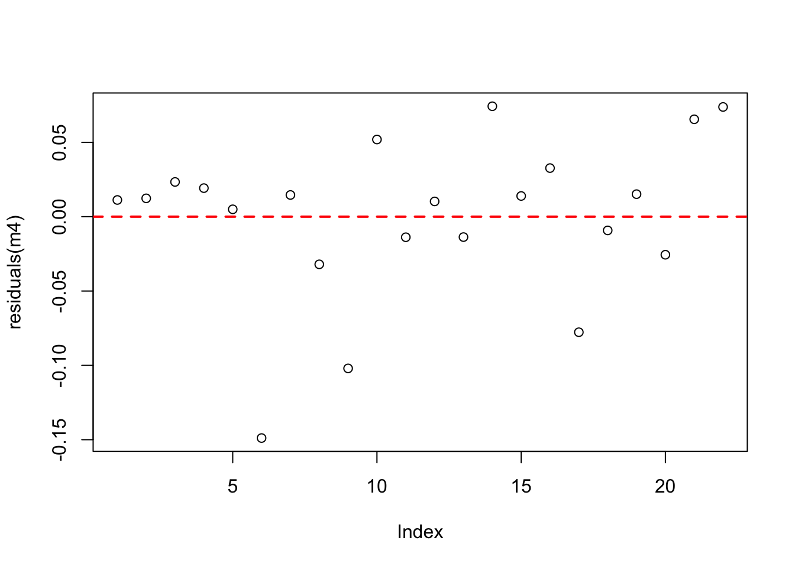
qqnorm(residuals(m4), pch = 16, cex = .75, col = rgb(0,0,0,0.75))
qqline(residuals(m4), col = "red", lwd = 2, lty = 2)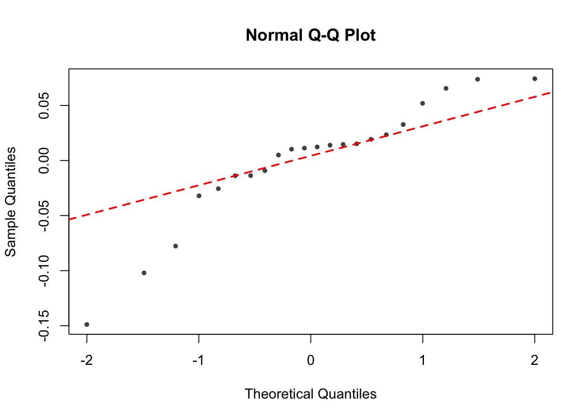
m5 <- glm(simpson ~ SOLAR,
data = understory.burned)
summary(m5)
Call:
glm(formula = simpson ~ SOLAR, data = understory.burned)
Coefficients:
Estimate Std. Error t value Pr(>|t|)
(Intercept) 3.057e+00 1.750e+00 1.747 0.096 .
SOLAR -3.687e-06 2.900e-06 -1.271 0.218
---
Signif. codes: 0 '***' 0.001 '**' 0.01 '*' 0.05 '.' 0.1 ' ' 1
(Dispersion parameter for gaussian family taken to be 0.003298041)
Null deviance: 0.071291 on 21 degrees of freedom
Residual deviance: 0.065961 on 20 degrees of freedom
AIC: -59.381
Number of Fisher Scoring iterations: 2pseudo.R.squared(m5)[1] 0.07476866plot(residuals(m5)); abline(h = 0, col = "red", lwd = 2, lty = 2)qqnorm(residuals(m5), pch = 16, cex = .75, col = rgb(0,0,0,0.75))
qqline(residuals(m5), col = "red", lwd = 2, lty = 2)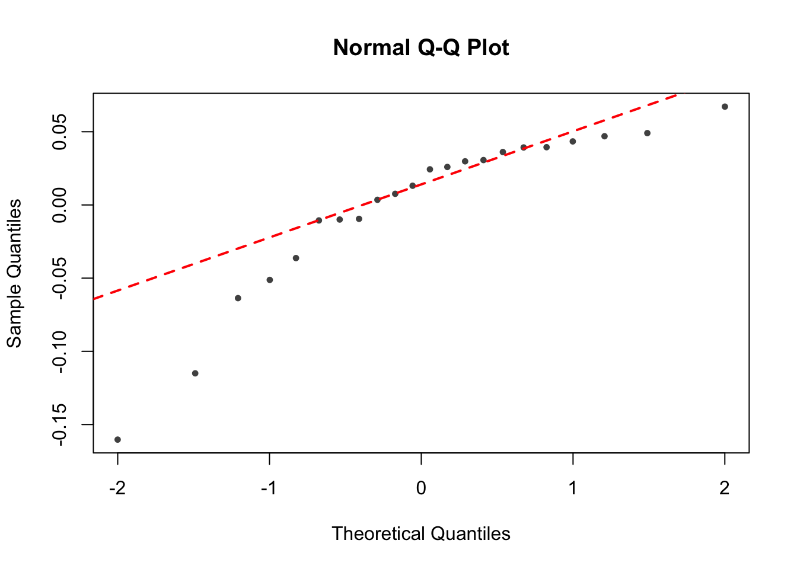
m6 <- glm(simpson ~ ORG_DEPTH_cm,
data = understory.burned)
summary(m6)
Call:
glm(formula = simpson ~ ORG_DEPTH_cm, data = understory.burned)
Coefficients:
Estimate Std. Error t value Pr(>|t|)
(Intercept) 0.8324410 0.0220060 37.828 <2e-16 ***
ORG_DEPTH_cm -0.0001187 0.0048377 -0.025 0.981
---
Signif. codes: 0 '***' 0.001 '**' 0.01 '*' 0.05 '.' 0.1 ' ' 1
(Dispersion parameter for gaussian family taken to be 0.003564451)
Null deviance: 0.071291 on 21 degrees of freedom
Residual deviance: 0.071289 on 20 degrees of freedom
AIC: -57.672
Number of Fisher Scoring iterations: 2pseudo.R.squared(m6)[1] 3.009253e-05plot(residuals(m6)); abline(h = 0, col = "red", lwd = 2, lty = 2)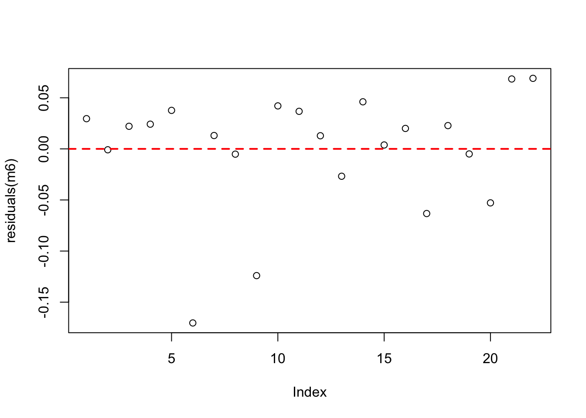
qqnorm(residuals(m6), pch = 16, cex = .75, col = rgb(0,0,0,0.75))
qqline(residuals(m6), col = "red", lwd = 2, lty = 2)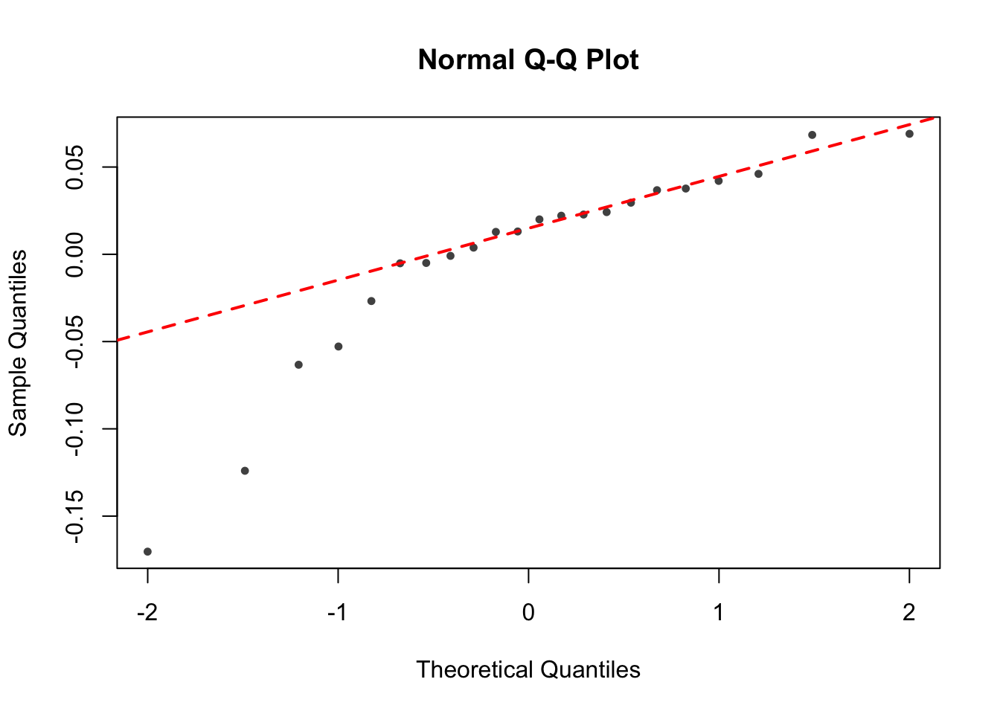
pwr.f2.test(u = 20,v = 21, f2 = NULL, sig.level = 0.05, power = 0.95)
Multiple regression power calculation
u = 20
v = 21
f2 = 1.329817
sig.level = 0.05
power = 0.95## getting standardized effect sizes from the predict function
newdata.SLOPE <-data.frame(SLOPE = seq(min(understory.burned$SLOPE), max(understory.burned$SLOPE), length.out = 30))
newdata.SOLAR <-data.frame(SOLAR = seq(min(understory.burned$SOLAR), max(understory.burned$SOLAR), length.out = 30))
newdata.ORG_DEPTH <-data.frame(ORG_DEPTH_cm = seq(min(understory.burned$ORG_DEPTH_cm), max(understory.burned$ORG_DEPTH_cm), length.out = 30))
preds1 <- predict(m1, newdata.SLOPE, type="response", se.fit = TRUE)
(preds1$fit[30] - preds1$fit[1])/(newdata.SLOPE$SLOPE[30] - newdata.SLOPE$SLOPE[1]) ## average number of species increase per 1 degree of slope 30
0.2370261 ((preds1$fit[30] - 1.96*preds1$se.fit[30]) - (preds1$fit[1] - 1.96*preds1$se.fit[1]))/(newdata.SLOPE$SLOPE[30] - newdata.SLOPE$SLOPE[1]) ## lower bound of 95% CI increase in number of species per 1 degree of slope 30
0.03345253 ((preds1$fit[30] + 1.96*preds1$se.fit[30]) - (preds1$fit[1] + 1.96*preds1$se.fit[1]))/(newdata.SLOPE$SLOPE[30] - newdata.SLOPE$SLOPE[1]) ## upper bound of 95% CI increase in number of species per 1 degree of slope 30
0.4405997 preds2 <- predict(m2, newdata.SOLAR, type="response", se.fit = TRUE)
(preds2$fit[30] - preds2$fit[1])/(newdata.SOLAR$SOLAR[30] - newdata.SOLAR$SOLAR[1]) ## average number of species increase per 1 degree of slope 30
-0.0003573138 ((preds2$fit[30] - 1.96*preds2$se.fit[30]) - (preds2$fit[1] - 1.96*preds2$se.fit[1]))/(newdata.SOLAR$SOLAR[30] - newdata.SOLAR$SOLAR[1]) ## lower bound of 95% CI increase in number of species per 1 degree of slope 30
-0.0002552882 ((preds2$fit[30] + 1.96*preds2$se.fit[30]) - (preds2$fit[1] + 1.96*preds2$se.fit[1]))/(newdata.SOLAR$SOLAR[30] - newdata.SOLAR$SOLAR[1]) ## upper bound of 95% CI increase in number of species per 1 degree of slope 30
-0.0004593395 preds3 <- predict(m3, newdata.ORG_DEPTH, type="response", se.fit = TRUE)
(preds3$fit[30] - preds3$fit[1])/(newdata.ORG_DEPTH$ORG_DEPTH_cm[30] - newdata.ORG_DEPTH$ORG_DEPTH_cm[1]) ## average number of species increase per 1 degree of slope 30
0.09807618 ((preds3$fit[30] - 1.96*preds3$se.fit[30]) - (preds3$fit[1] - 1.96*preds3$se.fit[1]))/(newdata.ORG_DEPTH$ORG_DEPTH_cm[30] - newdata.ORG_DEPTH$ORG_DEPTH_cm[1]) ## lower bound of 95% CI increase in number of species per 1 degree of slope 30
-0.1913455 ((preds3$fit[30] + 1.96*preds3$se.fit[30]) - (preds3$fit[1] + 1.96*preds3$se.fit[1]))/(newdata.ORG_DEPTH$ORG_DEPTH_cm[30] - newdata.ORG_DEPTH$ORG_DEPTH_cm[1]) ## upper bound of 95% CI increase in number of species per 1 degree of slope 30
0.3874979 preds4 <- predict(m4, newdata.SLOPE, type="response", se.fit = TRUE)
(preds4$fit[30] - preds4$fit[1])/(newdata.SLOPE$SLOPE[30] - newdata.SLOPE$SLOPE[1]) ## average diversity increase per 1 degree of slope 30
0.007877722 ((preds4$fit[30] - 1.96*preds4$se.fit[30]) - (preds4$fit[1] - 1.96*preds4$se.fit[1]))/(newdata.SLOPE$SLOPE[30] - newdata.SLOPE$SLOPE[1]) ## lower bound of 95% CI increase in diversity per 1 degree of slope 30
0.005717777 ((preds4$fit[30] + 1.96*preds4$se.fit[30]) - (preds4$fit[1] + 1.96*preds4$se.fit[1]))/(newdata.SLOPE$SLOPE[30] - newdata.SLOPE$SLOPE[1]) ## upper bound of 95% CI increase in diversity per 1 degree of slope 30
0.01003767 preds5 <- predict(m5, newdata.SOLAR, type="response", se.fit = TRUE)
(preds5$fit[30] - preds5$fit[1])/(newdata.SOLAR$SOLAR[30] - newdata.SOLAR$SOLAR[1]) ## average diversity increase per 1 degree of slope 30
-3.687128e-06 ((preds5$fit[30] - 1.96*preds5$se.fit[30]) - (preds5$fit[1] - 1.96*preds5$se.fit[1]))/(newdata.SOLAR$SOLAR[30] - newdata.SOLAR$SOLAR[1]) ## lower bound of 95% CI increase in diversity per 1 degree of slope 30
-3.111212e-06 ((preds5$fit[30] + 1.96*preds5$se.fit[30]) - (preds5$fit[1] + 1.96*preds5$se.fit[1]))/(newdata.SOLAR$SOLAR[30] - newdata.SOLAR$SOLAR[1]) ## upper bound of 95% CI increase in diversity per 1 degree of slope 30
-4.263045e-06 preds6 <- predict(m6, newdata.ORG_DEPTH, type="response", se.fit = TRUE)
(preds6$fit[30] - preds6$fit[1])/(newdata.ORG_DEPTH$ORG_DEPTH_cm[30] - newdata.ORG_DEPTH$ORG_DEPTH_cm[1]) ## average diversity increase per 1 degree of slope 30
-0.0001186829 ((preds6$fit[30] - 1.96*preds6$se.fit[30]) - (preds6$fit[1] - 1.96*preds6$se.fit[1]))/(newdata.ORG_DEPTH$ORG_DEPTH_cm[30] - newdata.ORG_DEPTH$ORG_DEPTH_cm[1]) ## lower bound of 95% CI increase in diversity per 1 degree of slope 30
-0.003955285 ((preds6$fit[30] + 1.96*preds6$se.fit[30]) - (preds6$fit[1] + 1.96*preds6$se.fit[1]))/(newdata.ORG_DEPTH$ORG_DEPTH_cm[30] - newdata.ORG_DEPTH$ORG_DEPTH_cm[1]) ## upper bound of 95% CI increase in diversity per 1 degree of slope 30
0.003717919 #### Table 1 - GLM results (global model) ####
## testing if we include a partial effects model for each what might happen
## using these as it is an easier explanation
m7 <- glm(Richness ~ SOLAR + ORG_DEPTH_cm,
data = understory.burned,
family = poisson(link = "log"))
summary(m7)
Call:
glm(formula = Richness ~ SOLAR + ORG_DEPTH_cm, family = poisson(link = "log"),
data = understory.burned)
Coefficients:
Estimate Std. Error z value Pr(>|z|)
(Intercept) 1.474e+01 7.327e+00 2.012 0.0442 *
SOLAR -1.967e-05 1.213e-05 -1.622 0.1048
ORG_DEPTH_cm 5.698e-04 1.971e-02 0.029 0.9769
---
Signif. codes: 0 '***' 0.001 '**' 0.01 '*' 0.05 '.' 0.1 ' ' 1
(Dispersion parameter for poisson family taken to be 1)
Null deviance: 16.539 on 21 degrees of freedom
Residual deviance: 13.815 on 19 degrees of freedom
AIC: 123.32
Number of Fisher Scoring iterations: 4pseudo.R.squared(m7)[1] 0.1647015plot(residuals(m7)); abline(h = 0, col = "red", lwd = 2, lty = 2)
qqnorm(residuals(m7), pch = 16, cex = .75, col = rgb(0,0,0,0.75))
qqline(residuals(m7), col = "red", lwd = 2, lty = 2)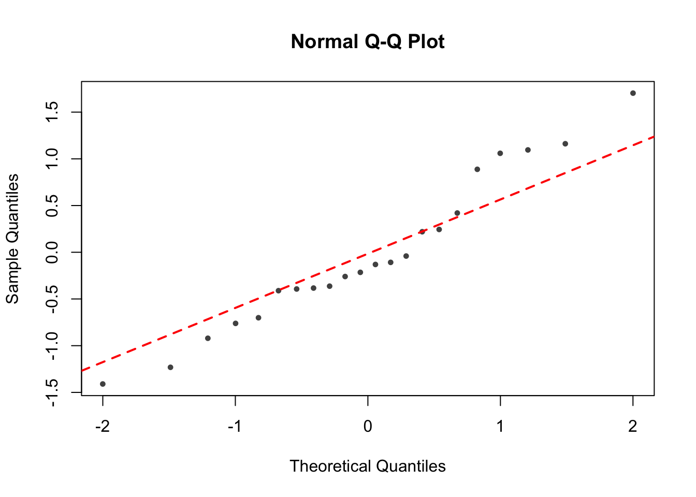
m8 <- glm(simpson ~ SOLAR + ORG_DEPTH_cm,
data = understory.burned)
summary(m8)
Call:
glm(formula = simpson ~ SOLAR + ORG_DEPTH_cm, data = understory.burned)
Coefficients:
Estimate Std. Error t value Pr(>|t|)
(Intercept) 3.113e+00 1.814e+00 1.715 0.103
SOLAR -3.774e-06 3.003e-06 -1.257 0.224
ORG_DEPTH_cm -9.793e-04 4.818e-03 -0.203 0.841
(Dispersion parameter for gaussian family taken to be 0.00346409)
Null deviance: 0.071291 on 21 degrees of freedom
Residual deviance: 0.065818 on 19 degrees of freedom
AIC: -57.429
Number of Fisher Scoring iterations: 2pseudo.R.squared(m8)[1] 0.07677598plot(residuals(m8)); abline(h = 0, col = "red", lwd = 2, lty = 2)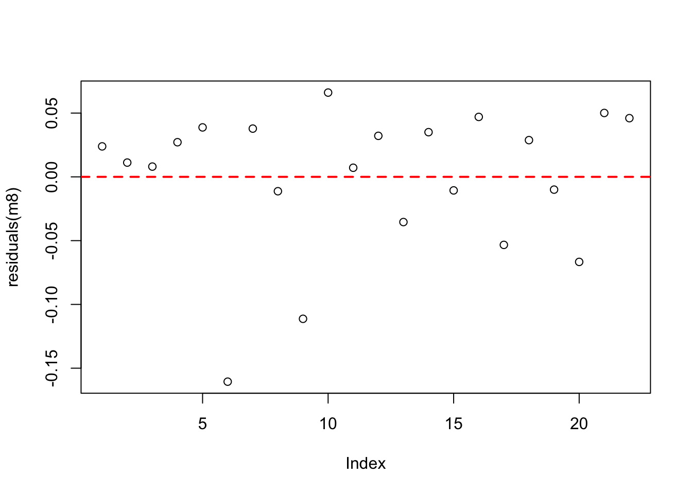
qqnorm(residuals(m8), pch = 16, cex = .75, col = rgb(0,0,0,0.75))
qqline(residuals(m8), col = "red", lwd = 2, lty = 2)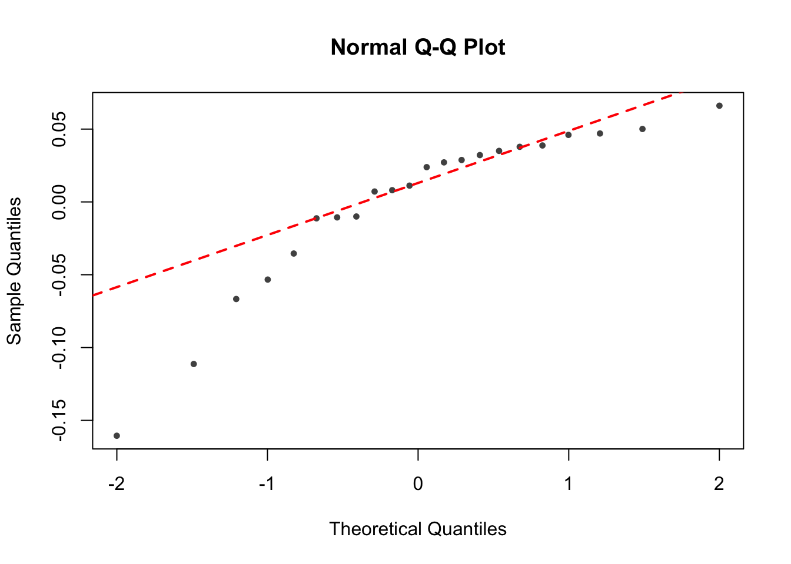
pwr.f2.test(u = 19,v = 21, f2 = NULL, sig.level = 0.05, power = 0.95)
Multiple regression power calculation
u = 19
v = 21
f2 = 1.315873
sig.level = 0.05
power = 0.95## determining which species are present in which fire categories for supplement
SpPl <- data.frame(Sp = unique(understory_long$species), Pl = NA)
Sp <- unique(understory_long$species)
for(i in 1:length(Sp)){
tmp <- understory_long[understory_long$species == Sp[i],]
tmp <- tmp[tmp$plotavg != 0,]
SpPl[i,2] <- paste(unique(understory_plots$treat[understory_plots$plot %in% tmp$PLOT]), collapse = " ")
# SpPl[i,2] <- paste(unique(understory_plots$treat[tmp$PLOT %in% understory_plots$plot]), collapse = " ")
}
SpPl$FG <- understory_long$FG[match(SpPl$Sp,understory_long$species)]
getwd()[1] "/Users/katherinehayes/Library/CloudStorage/GoogleDrive-k8rhayes@gmail.com/My Drive/Work/Projects/Reburns/Chapters/Community-Regen"# write.csv(SpPl, "SpeciesFunctionalGroupsBurns.csv")Session Info
sessionInfo()R version 4.4.1 (2024-06-14)
Platform: aarch64-apple-darwin20
Running under: macOS Sonoma 14.0
Matrix products: default
BLAS: /Library/Frameworks/R.framework/Versions/4.4-arm64/Resources/lib/libRblas.0.dylib
LAPACK: /Library/Frameworks/R.framework/Versions/4.4-arm64/Resources/lib/libRlapack.dylib; LAPACK version 3.12.0
locale:
[1] en_US.UTF-8/en_US.UTF-8/en_US.UTF-8/C/en_US.UTF-8/en_US.UTF-8
time zone: America/Chicago
tzcode source: internal
attached base packages:
[1] stats graphics grDevices utils datasets methods base
other attached packages:
[1] pwr_1.3-0 MASS_7.3-61 dplyr_1.1.4 vegan_2.6-8 lattice_0.22-6
[6] permute_0.9-7 tidyr_1.3.1
loaded via a namespace (and not attached):
[1] vctrs_0.6.5 nlme_3.1-165 cli_3.6.3 knitr_1.48
[5] rlang_1.1.4 xfun_0.47 purrr_1.0.2 generics_0.1.3
[9] jsonlite_1.8.8 glue_1.7.0 htmltools_0.5.8.1 fansi_1.0.6
[13] rmarkdown_2.28 grid_4.4.1 evaluate_0.24.0 tibble_3.2.1
[17] fastmap_1.2.0 yaml_2.3.10 lifecycle_1.0.4 cluster_2.1.6
[21] compiler_4.4.1 htmlwidgets_1.6.4 pkgconfig_2.0.3 mgcv_1.9-1
[25] digest_0.6.37 R6_2.5.1 tidyselect_1.2.1 utf8_1.2.4
[29] splines_4.4.1 parallel_4.4.1 pillar_1.9.0 magrittr_2.0.3
[33] Matrix_1.7-0 withr_3.0.1 tools_4.4.1